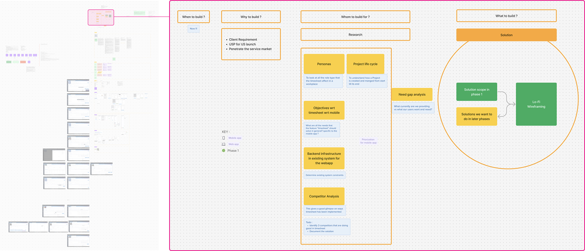
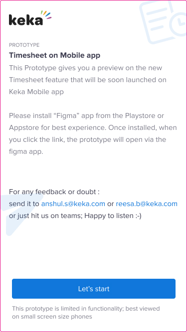
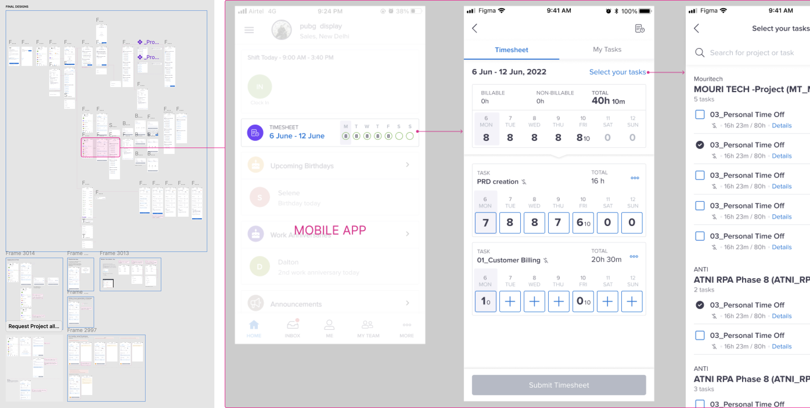

After the research phase I was laser focused on designing and PM took the backseat reviewing work daily fine tuning - copy, user journey flows of each personas.
We also prototyped few scenarios and gave the Link for folks internally to see if the solution would make sense.

